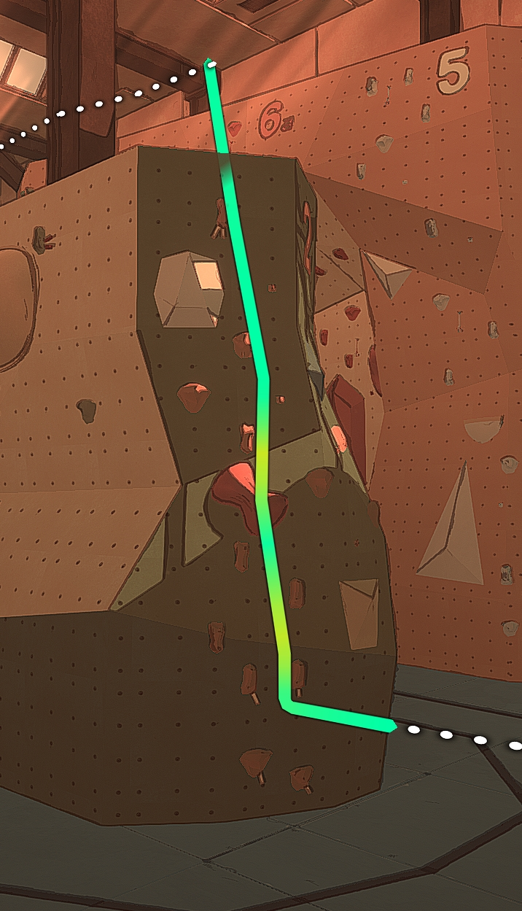

This is a collection of routes that the community of Cairn has accomplished and want to share with all climbers of the mountain of Kami (and hopefully others in the future).
Below is an example route page with a brief explanation of each item you'll find on that page.
| Difficulty | Rating of how hard the climb is (higher number is harder) |
|---|---|
| Location | Where on the map the route is |
| Date | The day the first ascent was recorded |
| First Ascent | Who first completed the route |
| First Redpoint | Who first completed the route without pitons |
| Buffless | Has the route been completed without using any consumables |
